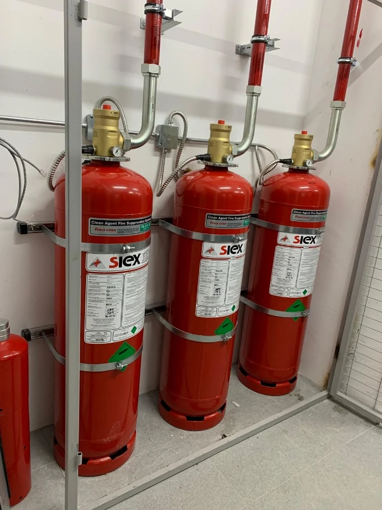

✓ Aktif Çalışır Teslim Edildi
T.C. Dışişleri Bakanlığı — Server Odası Novec 1230 Gazlı Yangın Söndürme Sistemi

T.C. Dışişleri Bakanlığı server odası Novec 1230 silindir ve vana grubu.
T.C. Dışişleri Bakanlığı bünyesinde 7/24 kesintisiz hizmet veren kritik server (sunucu) odası için; aktif bilişim kabinetlerine ve optik ağ donanımlarına zarar vermeyen, yalıtkan ve sıfır kalıntılı Novec 1230 (FK-5-1-12) gazlı yangın söndürme sistemi tesis edilmiştir.
NFPA 2001 ve TS EN 15004-2 standartlarına göre akredite hidrolik hesaplamalar ve izometrik borulama projeleri çizilmiş; montaj sonrasında gazın odada minimum 10 dakika tutunabildiğini doğrulayan Door Fan (Oda Sızdırmazlık) Testi yapılarak sistem aktif teslim edilmiştir.
KURUM / MAHALDışişleri Bakanlığı Server
SÖNDÜRÜCÜ AJANNovec 1230 (FK-5-1-12)
MÜHENDİSLİK & TESTHidrolik Hesap + Door Fan
STANDARTNFPA 2001 & EN 15004-2
Saha Mühendislik ve Uygulama Akışı (İnfografik Süreç Özeti)
01 · KEŞİF & RÖLÖVEHacim & Risk AnaliziTavan, yükseltilmiş döşeme ve kabinet net hacim ölçümü.
02 · MÜHENDİSLİKHidrolik Hesap & Projeİzometrik boru çapı, nozul orifis ve ajan miktarı hesabı.
03 · MONTAJSilindir & OtomasyonFK-5-1-12 tüp, deşarj hattı ve çapraz zon algılama kurulumu.
04 · DOĞRULAMADoor Fan & Aktif TeslimOda sızdırmazlık testi (min. 10 dk tutma) ve devreye alma.